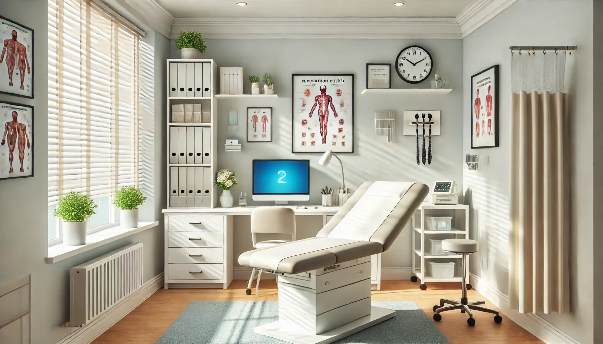

Ma mission
Offrir un espace de calme, d’écoute et de transformation douce. À travers l’hypnose, le magnétisme et d’autres pratiques complémentaires, j’accompagne chaque personne vers plus d’équilibre intérieur : apaiser les émotions, relâcher les tensions, retrouver confiance et clarté.
Qui suis-je ?
Je m’appelle Marie-Odile Mathieu.
: 💛 Mon histoire, ma vocation
Depuis toujours, j’ai cette envie profonde d’aider les autres.
Petite déjà, je voulais comprendre pourquoi les gens ressentaient certaines choses, comment ils vivaient leurs émotions, et surtout, comment les aider à aller mieux.
Cette curiosité du cœur est devenue, au fil des années, une véritable passion pour la compréhension de l’humain.
Diplômée en 2016, j’ai très vite compris que l’accompagnement ne se résumait pas à une méthode ou une technique.
Aider, pour moi, c’est écouter au-delà des mots, c’est voir la personne dans sa globalité — son corps, son esprit, ses émotions, son histoire.
C’est ce qui m’a naturellement conduite vers l’hypnose holistique, une approche douce, profonde et respectueuse, qui prend en compte tout ce que nous sommes.
Ce que j’aime dans mon métier, c’est de voir les visages s’éclairer, les épaules se relâcher, les regards changer…
C’est d’assister à ces moments où une personne réalise qu’elle a toujours eu les ressources en elle, et qu’il suffisait juste de les réveiller.
Chaque séance est une rencontre, un chemin partagé, une libération.
Aujourd’hui, j’exerce avec la même passion qu’au premier jour — peut-être même plus.
Parce que rien n’est plus beau que de voir quelqu’un se reconnecter à soi, guérir de ses blessures et retrouver sa liberté intérieure.
🌸 Aider les autres à comprendre le “pourquoi du comment”, à se libérer et à se retrouver… c’est plus qu’un métier, c’est ma mission de vie. 🌸
Ma manière de travailler
- Écoute active & sécurité : vous êtes accueilli·e sans jugement, à votre rythme.
- Sur-mesure : chaque séance est construite selon votre objectif (gestion des émotions, sommeil, tabac, alimentation, douleurs, stress, etc.).
- En douceur : j’utilise des techniques respectueuses du système nerveux (respiration, métaphores, visualisations, ancrages).
- Autonomie : je donne des outils concrets (exercices, ancrages) pour prolonger les effets à la maison.
Les pratiques
- Hypnose émotionnelle : libérer les blocages, apaiser les peurs, retrouver un état intérieur plus stable et serein.
- Hypnose minceur : rééquilibrer la relation à l'alimentation, travailler la satiété, déprogrammer le grignotage.
- Hypnose tabac : déprogrammer les automatismes et se libérer du besoin de fumer durablement.
- Magnétisme : rééquilibrage énergétique, détente profonde, soutien au mieux-être global.
- Reboutement : approche traditionnelle manuelle, douce, pour soulager certaines tensions (en complémentarité d'un suivi médical).
- Harmonisation du lieu (sur demande) : nettoyage énergétique et stabilisation des ambiances d'un habitat ou d'un espace professionnel.
Une séance, concrètement
Accueil & objectif (10–15 min) – on clarifie ce que vous souhaitez changer et ce qui serait un bon résultat pour vous.
Pratique personnalisée (30–60 min) – hypnose, magnétisme, techniques de respiration/visualisation, ancrages, selon le besoin.
Intégration & outils (10-15 min) – retour à soi en douceur, consignes simples.
Durée : 1 h à 1 h 30 selon la séance.
Fréquence : certaines demandes se règlent en 1–2 séances, d’autres nécessitent un suivi. Nous décidons ensemble.
Valeurs & éthique
- Respect et confidentialité
- Bienveillance et non-jugement
- Responsabilisation : vous restez acteur de votre changement
- Complémentarité : l’hypnose et le magnétisme ne remplacent pas un avis ou un traitement médical.
- Reboutement : approche manuelle complémentaire
Contre‑indications & cadre
L’hypnose n’est pas indiquée en cas de troubles psychiatriques sévères non suivis médicalement. En cas de traitement, ne l’arrêtez jamais sans avis médical. Pour toute douleur inhabituelle, consultez d’abord un médecin.
Tarifs & modalités
Séance individuelle : selon la thématique (voir page Services).
Règlement : espèces / virement.
Annulation : prévenir 24 h à l’avance si possible.
Le cabinet
Un espace chaleureux, intimiste et apaisant à Replonges (01750), uniquement sur rendez-vous.
Prendre rendez‑vous
Pour prendre rendez‑vous, merci d'appeler au 06 52 35 36 71 ou d'envoyer un email à marieodilemath@gmail.com. Vous pouvez aussi me contacter pour toute question.
